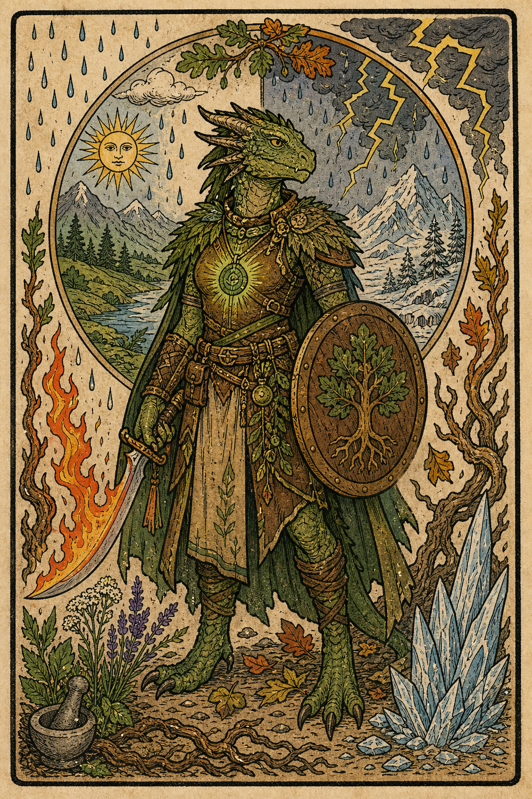

Player Character
Vanessa
Dragonborn / Druid (Land) / Level 5
AC15
Init+2
Prof+3
Speed30 ft
Edit OverviewEdit
ClassDruid
SubclassLand
RaceDragonborn
BackgroundHermit
Experience8000
Gold0
Hero Points0
Guild RankE
Guild Points51
Edit AbilitiesEdit
Strength13+1
Dexterity14+2
Constitution16+3
Intelligence13+1
Wisdom17+3
Charisma12+1
Edit CombatEdit
Armor Class15
Initiative+2
Proficiency+3
Speed30 ft
Simple Melee+4
Simple Ranged+5
Martial Melee+1
Martial Ranged+2
Spell Attack+6
Spell Save DC14
Weapon Attacks
Edit Combat StatsEdit
Edit HealthEdit
Edit AbilitiesEdit
Saving Throws
Strength+1
Dexterity+2
Constitution+3
Intelligence+4
Wisdom+6
Charisma+1
Skills
Acrobatics DEX+2
Animal Handling WIS+3
Arcana INT+1
Athletics STR+1
Deception CHA+1
History INT+1
Insight WIS+3
Intimidation CHA+1
Investigation INT+1
Medicine WIS+6
Nature INT+4
Perception WIS+3
Performance CHA+1
Persuasion CHA+1
Religion INT+4
Sleight of Hand DEX+2
Stealth DEX+2
Survival WIS+6
Edit EquipmentEdit
ClassDruid (Land)
BackgroundHermit
FeatsLucky
RaceDragonborn
No extra class features recorded.